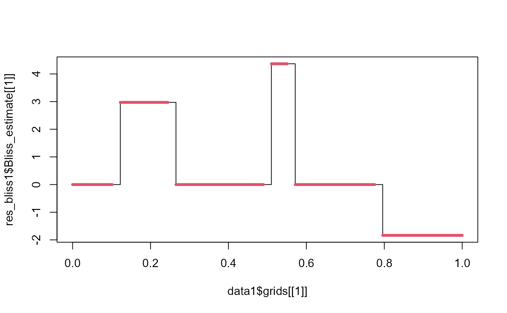

determine_intervals.RdDetermine for which intervals a function is nonnull.
determine_intervals(beta_fct)
| beta_fct | a numerical vector. |
|---|
a matrix with 3 columns : "begin", "end" and "value". The two first columns define the begin and the end of the intervals and the third gives the mean values of each interval.
data(data1) data(param1) # result of res_bliss1<-fit_Bliss(data=data1,param=param1) data(res_bliss1) intervals <- determine_intervals(res_bliss1$Bliss_estimate[[1]]) plot(data1$grids[[1]],res_bliss1$Bliss_estimate[[1]],type="s")for(k in 1:nrow(intervals)){ segments(data1$grids[[1]][intervals[k,1]],intervals[k,3], data1$grids[[1]][intervals[k,2]],intervals[k,3],col=2,lwd=4) }